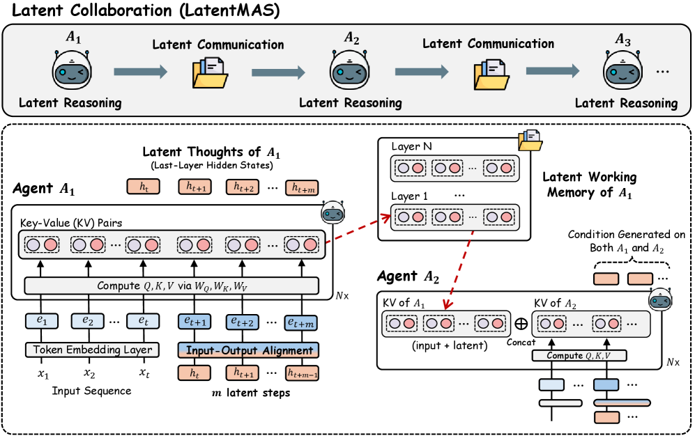

Why it matters왜 중요한가
Having agents talk in "human-readable text" is expensive, slow, and leaks information.
에이전트들이 "사람이 읽는 텍스트"로 대화하는 건 비싸고, 느리고, 정보가 샌다.
Today's LLM multi-agent systems (MAS) rely on natural-language tokens for both internal reasoning and inter-agent communication. That's nice for human readability — but token costs are high, and re-encoding into discrete tokens loses expressiveness and information fidelity. This paper asks: "Can a MAS collaborate purely in latent space?"
현재 LLM 멀티에이전트 시스템(MAS)은 내부 추론도, 에이전트 간 통신도 전부 자연어 토큰에 의존한다. 사람이 읽기엔 좋지만 — 토큰 비용이 크고, 이산(discrete) 토큰으로 다시 인코딩하면서 표현력과 정보 충실도(fidelity)가 손실된다. 이 논문은 묻는다: "MAS가 순수하게 잠재공간에서만 협업할 수 있을까?"

By the numbers핵심 숫자
(sequential average)단일 모델 대비 정확도
(sequential 평균)
(vs. text MAS, max)출력 토큰
(텍스트 MAS 대비 최대)
(end-to-end average)추론 속도
(end-to-end 평균)
(hierarchical average)텍스트 MAS 대비 정확도
(hierarchical 평균)
LLMs (Qwen3 · Llama3)벤치마크 · 5개
LLM(Qwen3·Llama3)
(training-free)추가 학습
(training-free)
Results — latent collaboration is more accurate결과 — 잠재 협업이 더 정확하다
| Benchmark | Single | TextMAS | LatentMAS |
|---|---|---|---|
| AIME24 | 63.3 | 63.3 | 66.7 |
| AIME25 | 56.7 | 60.0 | 63.3 |
| GPQA-Diamond | 48.5 | 51.5 | 52.0 |
In one diagram한 장의 그림
How it works — two mechanisms아이디어: 두 개의 메커니즘
Auto-regressive Latent Thoughts
Instead of decoding tokens, it feeds the last-layer hidden state back as the next step's input embedding. The distribution mismatch is corrected by an alignment operator Wa (computed once). Each step carries richer meaning.
토큰을 디코딩하지 않고, 마지막 레이어 hidden state를 다음 스텝의 입력 임베딩으로 되먹인다. 분포 어긋남은 정렬 연산자 Wa(한 번만 계산)로 보정. 한 스텝에 더 풍부한 의미를 담는다.
Latent Working Memory Transfer
An agent's layer-wise KV-cache is concatenated directly onto the next agent's cache. With no re-encoding, it hands over "everything thought so far" losslessly (Thm 3.3).
에이전트의 레이어별 KV-cache를 다음 에이전트 캐시에 그대로 concat. 재인코딩 없이 무손실(lossless)로 "방금까지의 생각"을 통째로 넘긴다(Thm 3.3).
How it works어떻게 작동하나
- Generate latent thoughts잠재 사고 생성Each agent generates hidden states auto-regressively for m steps (sweet spot ≈ 40–80 steps).각 에이전트가 m 스텝 동안 hidden state를 auto-regressive하게 생성(최적 구간 ≈ 40~80 스텝).
- Align input distribution입력 분포 정렬Wa maps output hidden states back into the input-embedding space to prevent drift — worth +2.3–5.3% accuracy on its own.Wa로 출력 hidden state를 입력 임베딩 공간으로 되돌려 drift 방지 — 그 자체로 정확도 +2.3~5.3%.
- Transfer working memory워킹 메모리 전달The KV-cache is merged layer-wise into the next agent, inheriting context without loss.KV-cache를 다음 에이전트에 layer-wise로 합쳐 컨텍스트를 손실 없이 승계.
- Final decoding최종 디코딩Only the last agent emits the answer as text from the accumulated latent memory (and even that answer is 29% shorter on average).마지막 에이전트만 누적된 잠재 메모리를 바탕으로 답을 텍스트로 출력(이 답도 평균 29% 더 짧아짐).
What to take away그래서, 가져갈 것
Close to a free lunch. With no extra training, it bolts onto off-the-shelf models to lift accuracy while cutting tokens and latency at the same time. Especially attractive for resource-constrained settings.
공짜 점심에 가깝다. 추가 학습 없이 기성 모델에 얹어 정확도↑ + 토큰·지연↓를 동시에. 자원 제약 환경에 특히 매력적.
You need both. Hybrids using only latent reasoning or only latent communication all underperform the full version — expressiveness and lossless transfer work together.
둘 다 있어야 효과. 잠재 추론만 / 잠재 통신만 쓰는 하이브리드는 모두 풀버전보다 낮음 — 표현력과 무손실 전달이 함께 작동.
Interpretability covered too. A debug mode that generates latent and text simultaneously agrees with the final answer 96.2% of the time — a diagnostic window into latent collaboration.
해석 가능성도 챙김. latent와 텍스트를 동시 생성하는 debug 모드는 최종 정답과 96.2% 일치 — 잠재 협업의 진단 창.
Generality. Consistent gains across the entire Qwen3 and Llama3 lineup. Extending to heterogeneous agents is the next challenge.
일반성. Qwen3·Llama3 전 계열에서 일관된 이득. 향후 이종(heterogeneous) 에이전트로의 확장이 다음 과제.